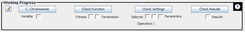
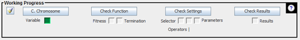
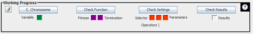

The working progress allows observing the progress as the genetic algorithm develops in the application.
When you start the application, progress will not show advancement as shown in the image:
But if for example is defined the chromosome, the box related to this progress will change its color:
If you make all the settings correctly, the progress should look like this:
Note. The termination is not required to be enabled to run the Genetic Algorithm.
The working progress includes some buttons with which you can view but not edit configurations that have already been made. Moreover, the working progress has a button with which you can clean the entire configuration.